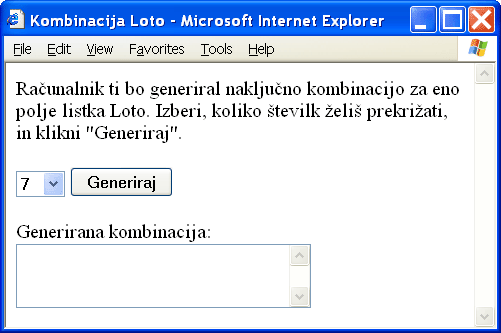
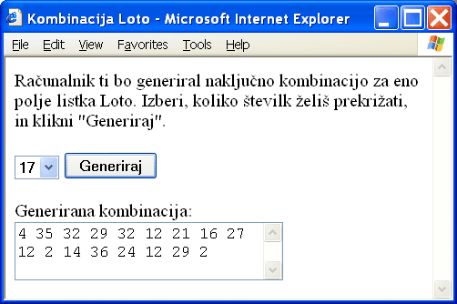
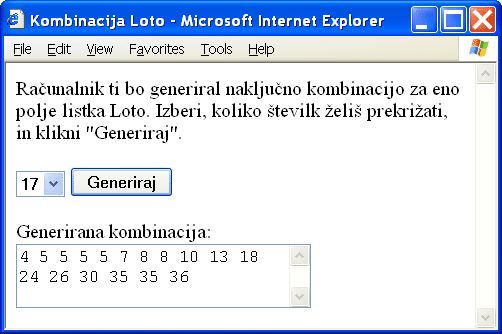
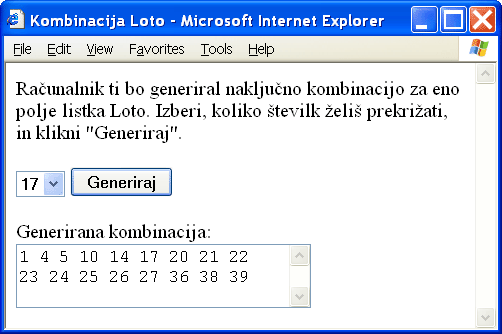
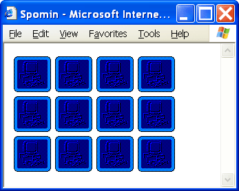
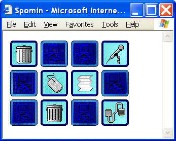
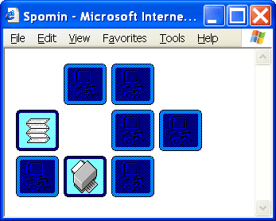

Tako. Prisopihali smo do zadnjega poglavja in takoj na začetku naj vas potolažim, da v njem ne bo več ničesar novega, vsaj kar se tiče tehnologije. Namesto tega se bomo dotaknili veliko zanimivejše tematike, to je načrtovanje spletnih strani. Področje načrtovanja spletnih aplikacij je zelo obsežno in zahtevno. Poleg tega doživlja krizo, podobno softverski krizi konca šestdesetih let prejšnjega stoletja, preden so se pojavili prvi strukturirani programski jeziki. Ogromno o načrtovanju spletnih strani in aplikacij bo našel bralec v ustrezni literaturi, v tem poglavju bom ponudil le nekaj malega za aromo. Prikazal vam bom dva zelo preprosta primera dinamičnih spletnih strani. V prvem primeru bomo načrtovali preprost generator kombinacije za Loto. Kdo ve, morda bo kdo z njegovo pomočjo postal milijonar! Drugi primer bo večini dobro znana igrica Spomin, v kateri skušajo igralci odkriti pare enakih sličic.
Ker se v tem poglavju ukvarjamo z načrtovanjem, je vsak od primerov dostopen v večih datotekah, od katerih predstavlja vsaka svojo stopnjo razvoja istega primera. Datoteke je moč dobiti na začetku posameznih razdelkov v stisnjeni obliki.
Pravila za igranje Lota dovoljujejo vplačila kombinacij dolžine od 7 pa do 17 številk, pri čemer izbiramo številke med 1 in 39. Spletna stran, ki jo bomo sestavili v tem razdelku, bo uporabniku omogočila, da izbere, koliko številk želi odkrižati na lističu, in da si generira poljubno različnih kombinacij izbrane dolžine.
V prvem koraku načrtovanja (Loto1.html) naše spletne strani si bomo zamislili izgled strani. Na strani mora biti najprej nekaj osnovnih napotkov, ki uporabniku razložijo, kaj mu stran ponuja in kako deluje. Druga stvar, ki jo bomo imeli na naši strani, je nek vnosni element, prek katerega bo uporabnik vnesel dolžino kombinacije. Če bi bil ta vnosni element polje za vnos besedila, si lahko kot programerji nakopljemo težave, saj moramo predvideti, da lahko uporabnik (namerno ali nenamerno) vanj vnese karkoli in ne le cela števila med 7 in 17. Da nam ne bo potrebno pisati kode za preverjanje vnešene vrednosti, bomo uporabili raje izbirni seznam, s katerim uporabnika zelo enostavno omejimo na želene vrednosti. Poleg izbirnega seznama potrebujemo še gumb, ki bo sprožil postopek generiranja številk. Na koncu dodamo še element, v katerem se bodo številke izpisale. Uporabili bomo kar urejevalno polje.
Čeprav moramo v prvem koraku načrtovanja že misliti na to, kako bo stran delovala, pa na tej stopnji tega še ne uresničimo. Na sliki 4 vidimo, kako bo stran izgledala.
|  |
| Slika 4: V prvem koraku načrtovanja si zamislimo izgled strani. |
V drugem koraku moramo poskrbeti, da se bo ob kliku na gumb izvedel upravljalnik dogodka, v katerem se bo v resnici vse dogajalo. Gumbu zato dodamo lastnost onclick in mu priredimo klic funkcije, ki opravlja vlogo upravljalnika dogodka:
onclick="generiraj()"
Funkcijo generiraj() napišemo v glavi dokumenta v elementu script. V drugem koraku se bomo zadovoljili s tem, da se bo generiralo in izpisalo toliko naključnih številk med 1 in 39, kolikor jih uporabnik želi. Ne bo nas še motilo, če se številke ponavljajo, ali če niso urejene po velikosti.
Takole je videti funkcija, s katero to dosežemo:
function generiraj()
{
var i, n;
var kombinacija = new Array();
n = document.getElementById("st_komb").value;
for (i = 0; i < n; i++)
{
kombinacija[i] = Math.floor(Math.random() * 38.99999) + 1;
}
document.getElementById("izpis").value = kombinacija.join(" ");
}
V prvih dveh vrsticah kode deklariramo nekaj spremenljivk, ki jih bomo v funkciji potrebovali. V tretji vrstici nam postopek getElementById() priskrbi sklic na objekt, ki predstavlja izbirni seznam. Zanima nas, katera postavka je bila v času pritiska na gumb izbrana, zato izberemo lastnost value in njeno vrednost priredimo spremenljivki n. Ta spremenljivka odslej hrani podatek o tem, koliko števil je potrebno generirati. Tretja vrstica je zapisana v nekoliko strnjeni obliki. Z naslednjim zapisom dosežemo isto:
var izbira = document.getElementById("st_komb");
n = izbira.value;
Vhodni podatek imamo. Zdaj lahko v ponavljalnem stavku for izračunamo n različnih naključnih številk in jih priredimo elementom od kombinacija[0] do kombinacija[n-1]. Posamezno številko izračunamo tako, da vrednost, ki jo vrne postopek random() pomnožimo z 38.99999 in dobljeno vrednost podamo postopku floor(). Slednji vrednost zaokroži navzdol, tako da dobimo številke med 0 in 38. Temu na koncu prištejemo 1 in dobimo številke, ki so lahko le med 1 in 39. Če bi namesto z 38.99999 množili z 39, bi se lahko na koncu sem in tja pojavila tudi vrednost 40. Razmislite, zakaj!
V zadnji vrstici priredimo izbrano kombinacijo lastnosti value objekta, ki predstavlja urejevalno polje. Elemente kombinacije smo združili s postopkom join(), ker smo želeli, da so izbrane številke ločene s presledki. Na sliki 5 vidimo primer delovanja naše strani po končanem drugem koraku načrtovanja.
|  |
| Slika 5: V drugem koraku generator že deluje, vendar se izbrane številke ponavljajo in niso urejene po velikosti. Številka 12 se je pojavila celo trikrat. |
V tretjem koraku (Loto3.html) bomo poskrbeli, da se bodo številke izpisale urejene po velikosti. Urejanje po velikosti ni prevelik problem, saj ima objekt Array vgrajeno metodo sort(), ki uredi elemente zbirke. Problem je le ta, da se elementi uredijo po abecedi. V našem primeru to pomeni, da bi se številke 2, 11, in 30 uredile v napačnem vrstnem redu 11, 2 in 30. Problem preprosto rešimo tako, da vsem izbranim številkam pred urejanjem prištejemo konstantno vrednost 9, ki jo pred izpisom spet odštejemo. Tako zdaj urejamo številke med 10 in 49, ki si tudi po abecedi sledijo v pravilnem vrstnem redu.
Da to dosežemo, moramo v naši funkciji spremeniti vrstico znotraj zanke for v
kombinacija[i] = Math.floor(Math.random() * 38.99999) + 10;
Razlika je v tem, da na koncu ne prištevamo 1, ampak 10. Med zanko for in izpisom izbranih številk dodamo še urejanje in še eno zanko for, v kateri vsem izbranim številkam odštejemo konstantno vrednost 9, da končno spet dobimo števila med 1 in 39:
kombinacija.sort();
for (i = 0; i < n; i++)
{
kombinacija[i] -= 9;
}
Na sliki 6 vidimo, da so zdaj številke urejene po velikosti.
|  |
| Slika 6: V tretjem koraku se izbrane številke še vedno ponavljajo, so pa že urejene po velikosti. |
Ostal nam je še zadnji korak načrtovanja (Loto4.html), v katerem se bomo znebili ponavljanja. Poskrbeti moramo samo za to, da vsakokrat, ko izberemo novo številko, preverimo, če ta številka slučajno že ne obstaja. Če obstaja, moramo izbiro ponoviti. Takoj za vrstico, ki elementu kombinacija[i] priredi naključno vrednost, dodamo še en stavek for:
kombinacija[i] = Math.floor(Math.random() * 38.99999) + 10;
for (j = 0; j < i; j++)
{
if (kombinacija[i] == kombinacija[j])
{
i--;
break;
}
}
V dodani zanki for primerjamo vse doslej izbrane številke (kombinacija[j]) s številko, ki smo jo pravkar izbrali (kombinacija[i]). Če se primerjava izide, potem spremenljivko i zmanjšamo za ena in s stavkom break končamo primerjanje. S tem, ko smo za ena zmanjšali vrednost spremenljivke i, smo povzročili, da se bo naslednje izbrano število priredilo še enkrat istemu elementu. To se bo dogajalo, vse dokler se ne bo generirala številka, ki v zbirki kombinacija še ne obstaja. Na sliki 7 vidimo končen izdelek.
|  |
| Slika 7: Končen izgled delujočega generatorja kombinacije za Loto. |
Tako, program deluje, zdaj pa hitro do šalterja in vplačat listič! Če pa je že pozno in je že vse zaprto, lahko poizkusite za vajo dopolniti stran tako, da bo možno poleg dolžine generirane kombinacije izbrati tudi, koliko kombinacij želimo generirati (na primer od 1 do 10). Tako bo lahko uporabnik z enim samim pritiskom na tipko "Generiraj" dobil hkrati tudi do 10 kombinacij. Poizkusite doseči tudi, da se bo vsebina izbirnega seznama za število kombinacij spreminjala v odvisnosti od izbire dolžine kombinacije. Če namreč vplačujete kombinacije dolžine 7, potem morate izpolniti kombinacijski listič, ki ima 10 polj za 10 različnih kombinacij. Za daljše kombinacije morate izpolniti sistemski listič, ki pa ima le 5 polj za 5 različnih kombinacij. Torej, v primeru, da želi uporabnik kombinacije dolžine 7, mu morate v drugem izbirnem seznamu ponuditi možnosti od 1 do 10, sicer pa le od 1 do 5.
V tej igri za enega ali več igralcev uporabljamo zbirko kart z različnimi sličicami. V zbirki so karte zastopane v parih, tako da se vsaka sličica pojavi na dveh kartah. Karte najprej premešamo in jih položimo na mizo s hrbtno stranjo navzgor. Vsakdo, ki je na potezi, obrne dve karti in če sta enaki, ju obdrži, sicer ju vrne nazaj na mizo, spet obrnjeni s hrbtom navzgor.
Na spletni strani, ki jo bomo sestavili, bo mogoče igrati Spomin v obliki pasjanjse. V oknu se bodo najprej pokazale s hrbtom navzgor obrnjene karte, ki jih bo igralec s klikom miške obračal. Ko bo obrnil tretjo karto, se bosta odprti karti zaprli, če bosta njuni sličici različni, sicer bosta karti izginili. Slika 8 prikazuje stanje na začetku igre.
|  |
| Slika 8: Ko naložimo stran v okno brskalnika, so vse karte Spomina zaprte. |
V prvem koraku (Spomin1.html) bomo spet samo oblikovali stran, funkcionalnost pa bomo postopoma dodajali v korakih, ki sledijo. Tokrat si bomo že za oblikovanje strani pomagali z jezikom JavaScript, saj bomo lahko na ta način kasneje zelo preprosto spreminjali nabor in število sličic. V telesu dokumenta najprej ustvarimo spremenljivko predpona, s pomočjo katere bomo lahko izbirali različne nabore sličic. Primeru sta priložena dva nabora s po 24 sličicami. Prvi nabor vsebuje različne računalniške, drugi pa športne ikone. Imena datotek, v katerih so računalniške sličice, se pričnejo s predpono "komp_", tiste s športnimi sličicami pa se pričnejo s predpono ""sport_"". Igralne sličice so oštevilčene s številkami od 0 do 23, obstajata pa še dve posebni sličici, ena za hrbtno stran karte in druga prozorna, ki jo uporabljamo za odstranjene karte. V našem primeru bomo uporabili računalniške ikone, zato nastavimo spremenljivko predpona na vrednost "komp_":
var predpona = "komp_";
Takoj za tem bomo klicali funkcijo zacetnoStanje(), ki ji podamo dva celoštevilska parametra. Prvi predstavlja število stolpcev, drugi pa število vrstic pravokotne mreže, na kateri bodo razporejene karte. S spreminjanjem teh dveh vrednosti lahko programer enostavno uravnava število in razporeditev kartic:
zacetnoStanje(4, 3);
Preostane nam samo še, da napišemo definicijo funkcije zacetnoStanje(). Takole izgleda:
function zacetnoStanje(stolpcev, vrstic)
{
var i;
var kart = stolpcev * vrstic;
document.write("<table cellpadding='2'>");
for (i = 0; i < kart; i++)
{
if (i % stolpcev == 0)
{
document.write("<tr>");
}
document.write("<td><img src='" + predpona + "ozadje.gif'");
document.write("id='karta" + i + "' name='karta" + i + "'+ /></td>");
if ((i + 1) % stolpcev == 0)
{
document.write("</tr>");
}
}
document.write("</table>");
}
Hiter pogled na funkcijo nam razkrije, da bomo karte vstavili v tabelo. V funkciji najprej izračunamo število kart, tako da pomnožimo število stolpcev in vrstic, in potem v dokument vpišemo začetno značko elementa table. V zanki for za vsako karto posebej v tabelo dodamo eno celico, v katero vstavimo element img:
document.write("<td><img src='" + predpona + "ozadje.gif'");
document.write("id='karta" + i + "' name='karta" + i + "'+ /></td>");
Lastnost src elementa img smo nastavili na ime datoteke, ki hrani hrbtno stran karte. Ime datoteke je sestavljeno iz predpone in niza "ozadje.gif". Vsakemu elementu smo določili tudi svojo vrednost za id, ki je sestavljena iz niza "karta" in zaporedne številke karte. Končen zapis za celico s prvo karto izgleda takole:
<td>
<img src='komp_ozadje.gif' id='karta0' name='karta0' />
</td>
Poskrbeti moramo le še za pravilno razporeditev vrstic v tabeli. To dosežemo z dvema stavkoma if znotraj zanke for. V prvem stavku if vstavimo značko za začetek vrstice vsakokrat, ko je ostanek deljenja zaporedne številke karte s številom stolpcev enak 0. Če imamo 12 kart razporejenih v 4 stolpce, se tako vrstice tabele pričnejo tik pred kartami 0, 4 in 8. Na podoben način dosežemo, da se značke za konec vrstice vstavijo tik za kartami 3, 7 in 11.
Preden nadaljujemo, poizkusite predponi spremeniti vrednost v "sport_". Spremenite tudi število vrstic in stolpcev prikaza in opazujte učinek.
V prvem koraku načrtovanja smo v resnici samo razporedili in prikazali hrbtne strani kart. V drugem koraku (Spomin2.html) bomo stran dopolnili tako, da se bo ob kliku na karto prikazala sličica. Na tej stopnji se odprte karte še ne bodo zapirale ali odstranjevale.
Če želimo, da se bo ob kliku na karto prikazala sličica, moramo najprej vsaki karti določiti sličico ter napisati ustrezen upravljalnik dogodka in ga povezati z vsemi kartami. V tem koraku načrtovanja bomo hkrati poskrbeli, da bodo sličice premešane. Ker v našem primeru uporabljamo 6 sličic, oštevilčenih s številkami od 0 do 5 in se vsaka sličica pojavi dvakrat, bomo za razporeditev sličic uporabili naključno generirano zbirko dvanajstih celih števil od 0 do 5 in še enkrat od 0 do 5. Na primer (1, 0, 2, 1, 3, 2, 4, 5, 5, 0, 4, 3). Takšno zbirko ustvarimo s klicem funkcije mesaj(), ki smo ga dodali v začetku funkcije zacetnoStanje():
var zaporedjeSlik = mesaj(kart);
Definicija funkcije mesaj() izgleda takole:
function mesaj(dolzina)
{
var karte = new Array(dolzina);
var i, indeks;
var tmp;
for (i = 0; i < dolzina; i++)
{
karte[i] = i % (dolzina / 2);
}
for (i = 0; i < dolzina; i++)
{
indeks = Math.round(Math.random() * (dolzina - 1));
tmp = karte[i];
karte[i] = karte[indeks];
karte[indeks] = tmp;
}
return karte;
}
V funkciji se najprej ustvari zbirka karte ustrezne dolžine. V prvi zanki for posameznim elementom priredimo po vrsti vrednosti od 0 do dolzina / 2 - 1 in še enkrat od 0 do dolzina / 2 - 1. V našem konkretnem primeru šestih parov bo imela zbirka karte ob zaključku prvega stavka for vsebino (0, 1, 2, 3, 4, 5, 0, 1, 2, 3, 4, 5). V drugi zanki for te vrednosti med seboj premešamo, in sicer tako, da večkrat zapored izberemo naključno vrednost, ki jo shranimo v spremenljivko indeks, potem pa med seboj zamenjamo elementa z indeksoma indeks in i. Funkcija na koncu vrne zbirko premešanih vrednosti, ki predstavljajo zaporedne številke kart.
Zdaj moramo vsakemu elementu img dodati še klic upravljalnika dogodka onclick:
document.write("onclick='klikNaKarto(" + i + ", " + zaporedjeSlik[i] + ")'");
Če ima na primer prvi element polja zaporedjeSlik vrednost 3, potem se v prvi element img v resnici zapiše:
onclick='klikNaKarto(0, 3)'
To pomeni, da se ob kliku na to konkretno karto kliče upravljalnik dogodka klikNaKarto() s parametroma 0 in 3. Prvi parameter upravljalniku pove, kateri element img je sprožil dogodek, drugi parameter pa pove, katero slikico je potrebno prikazati. Definicija upravljalnika dogodka na tej stopnji načrtovanja vsebuje le dve vrstici kode:
function klikNaKarto(stevKarte, stevSlike)
{
var karta = document.getElementById("karta" + stevKarte);
karta.src = predpona + stevSlike + ".gif";
}
V prvi vrstici s postopkom getElementById() dobimo sklic na objekt, ki je sprožil dogodek, v drugi vrstici pa samo spremenimo lastnost src tega objekta in element img že prikazuje sličico, ki mu pripada.
Slika 9 prikazuje delovanje Spomina po končanem drugem koraku načrtovanja. Kliknjene karte so odprte.
|  |
| Slika 9: V drugem koraku načrtovanja smo dosegli, da se ob kliku karta odpre. Odprta karta se nikoli ne zapre ali izgine, tudi če odpremo več kot 2 karti. |
V zadnjem koraku (Spomin3.html) nam je preostalo še, da napišemo ustrezno kodo za zapiranje in odstranjevanje kart. V telo dokumenta najprej dodamo nekaj novih spremenljivk, ki jih bomo v ta namen potrebovali. Spomnimo se, da so to globalne spremenljivke, ki obstajajo, dokler je stran naložena:
var prviKlik = true;
var odprtaKarta1;
var odprtaKarta2;
Kadar kliknemo na kakšno karto, je pomembno, da vemo, ali smo kliknili prvo ali drugo karto iz para. To informacijo bo hranila spremenljivka prviKlik, ki bo imela vrednost true, dokler ne bomo kliknili prve karte. Takoj po kliku na prvo karto bo dobila vrednost false. To vrednost bo obdržala toliko časa, dokler ne bomo kliknili druge karte, nakar bo zopet dobila vrednost true. Spremenljivki odprtaKarta1 in odprtaKarta2 bosta hranili zaporedni številki nazadnje odprtih kart, da jih bomo lahko po potrebi odstranili ali zaprli.
Takoj za prvo vrstico upravljalnika dogodka klikNaKarto() dodamo naslednjo kodo:
if (karta.src.indexOf("ozadje.gif") == -1)
{
return; //kliknili smo odprto ali odstranjeno karto
}
Ta koda povzroči, da v primeru, da smo kliknili na karto, ki ni zaprta, takoj zapustimo funkcijo. Igro smo namreč zasnovali tako, da lahko igralec povzroči spremembo le s klikom na zaprto karto.
Na koncu funkcije klikNaKarto(), ko se karta že odpre, bomo dodali stavek if..else, s katerim poskrbimo za pravilno dogajanje v odvisnosti od tega, ali smo kliknili prvo ali drugo karto iz para:
if (prviKlik == true) //klik na prvo karto
{
zapriKarte();
prviKlik = false;
odprtaKarta1 = stevKarte;
}
else //klik na drugo karto
{
odprtaKarta2 = stevKarte;
prviKlik = true;
}
Če se je dogodek sprožil s klikom na prvo karto, potem klic funkcije zapriKarte() najprej zapre oziroma odstrani trenutno odprt par. Definicijo funkcije zapriKarte() si bomo ogledali malo kasneje. Spremenljivka prviKlik potem preklopi vrednost na false in shrani se številka kliknjene karte, ki je zdaj odprta.
V primeru, da se je dogodek sprožil kot posledica klika na drugo karto, si samo zapomnimo zaporedno številko druge odprte karte in preklopimo vrednost spremenljivke prviKlik na true.
Ostala nam je samo še definicija funkcije zapriKarte(). Takole izgleda:
function zapriKarte()
{
var karta1 = document.getElementById("karta" + odprtaKarta1);
var karta2 = document.getElementById("karta" + odprtaKarta2);
if (karta1 == null || karta2 == null)
{
return;
}
if (karta1.src == karta2.src)
{
karta1.src = predpona + "prozorna.gif";
karta2.src = predpona + "prozorna.gif";
}
else
{
karta1.src = predpona + "ozadje.gif";
karta2.src = predpona + "ozadje.gif";
}
}
V prvih dveh vrsticah si pridobimo sklic na obe kliknjeni karti. Ob čisto prvem kliku, takoj po tem, ko se stran naloži v brskalnik, spremenljivki odprtaKarta1 in odprtaKarta2 še nimata določenih vrednosti, zato postopek getElementById() vrne vrednost null. To se zgodi zato, ker postopek prejme parameter z vrednostjo "kartaundefined", objekt s takšnim id pa ne obstaja. V tem primeru v prvem stavku if takoj izstopimo iz funkcije. V nasprotnem primeru najprej preverimo, če prikazujeta obe odprti karti isto sličico in če jo, potem karti odstranimo. Karti odstranimo tako, da jima priredimo ime datoteke s prozorno sliko, ki se v oknu ne bo videla. Če odprti karti prikazujeta različni sličici, ju zapremo, tako da jima priredimo sliki ozadja.
Slika 10 prikazuje delujočo stran, kjer je nekaj parov že odkritih in odstranjenih.
|  |
| Slika 10: Stran zdaj deluje. Odkriti pari so odstranjeni. |
Delo programerja v resnici nikoli ni končano, saj se sproti porajajo nove in nove ideje. Poizkusite strani, ki smo jo pravkar izdelali, dodat nekatere izboljšave: